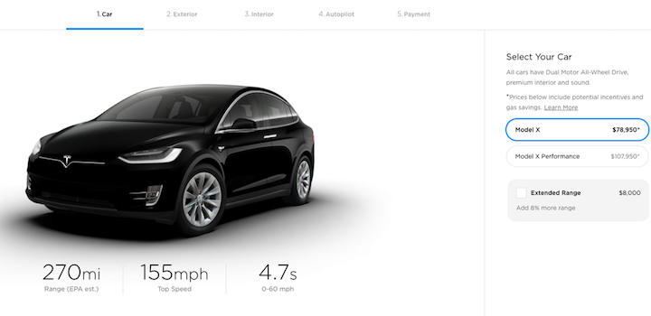

Tesla-მ მოდელების Model X და Model S იაფიანი ვერსიები გამოუშვა. ახალ ვერსიებს 75 კვტ-იანის ნაცვლად, 100 კვტ-იანი ბატარეები აქვთ. Mashable-ის ცნობით, Model S-ის შეძენა, 498 კილომეტრიანი უზრუნველყოფით, ახლა $85.000-დ არის შესაძლებელი. Model X-ის ყიდვა, რომელსაც ერთ დამუხტვაზე 434 კმ-ის გარბენა შეუძლია, 88.000 დოლარად შეგიძლიათ. თუმცა 100კვტ-იანი მოდელების შეძენა კვლავაც იქნება შესაძლებელი. უბრალოდ, მას გაუმჯობესებული მონაცემები და 8.000 დოლარით მეტი ეღირება. ცვლილებაა დასახელებაშიც – ამ მოდელებს სახელწოდებაში Extended Range დაემატება.
